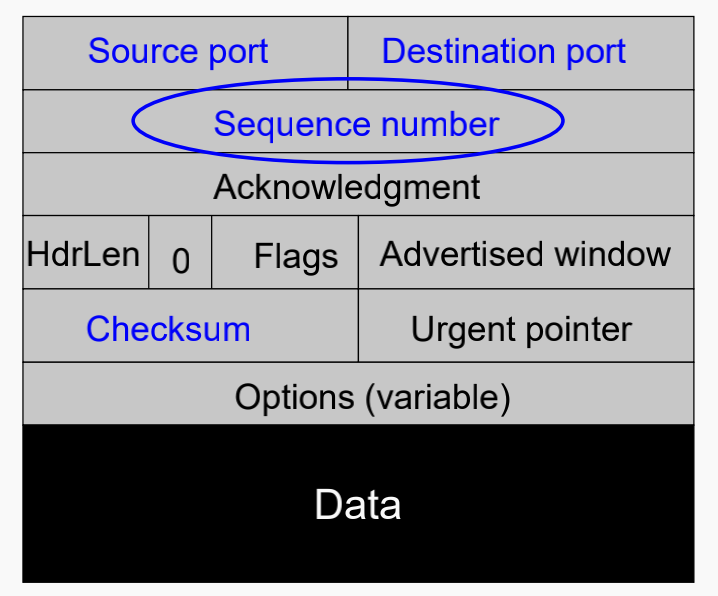
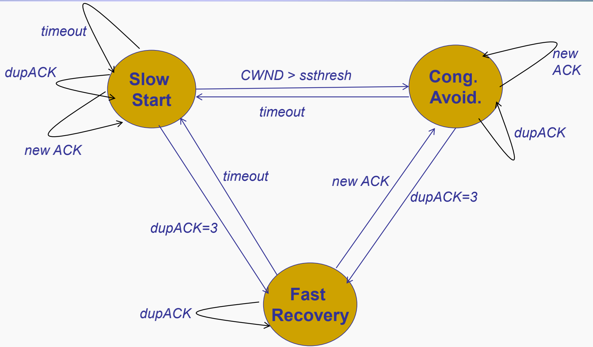
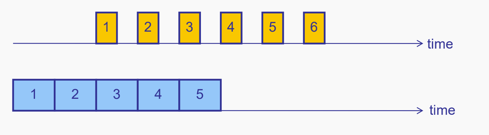
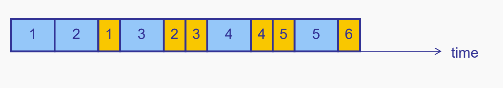

传输层概念问答
1.为什么需要传输层？
IP是尽力而为协议，数据包在传输过程中存在损坏延迟重复等，且没有做到流量控制。
2.什么是运输层的多路复用和多路分解？
多路复用指从不同用户程序获取并组合数据发送给网络层。
解多路复用指讲网络层的数据分解并传输给相应的socket。
3.传输层的作用有哪些？
- 进程间通信
- 提供端到端服务（可选）
- 提供TCP/UDP协议 TCP提供可靠的顺序的字节流抽象，UDP为最小传输协议
4.什么是socket？
操作系统对于应用交换信息的接口抽象。表达为<HostIP,Post>
两种类型：UDP socket:SOCK_DGRAM TCP socket: SOCK_STREAM
5.端口号port是什么？
帮助区分应用进程16比特数字。操作系统存储sockets和端口号。
UDP: (local port, local IP address)
TCP: (local port, local IP, remote port, remote IP)
6.解多路复用怎么进行？
读取接受到包的原目的IP地址以及原目的端口号，从而得到socket。
7.无连接的多路分解怎么进行？
创建数据包的时候需要指定目的端口和IP，分解时依据该二元组送给相应socket。
8.面向连接的多路分解怎么进行？
分解时需要用到四个数据：原目的IP以及端口号。与无连接不同的是，例如web会为每个请求建立相应的端口。
9.可靠传输需要解决哪些问题？
包的损毁、丢失、延迟、失序、重复
10.如何解决数据包损坏？
数据包正确接收端回复ACK，损坏回复NACK。对于多个数据包回复带有序列号的ACK/NACK
11.如何解决数据包丢失？
设定一个timeout。超时重发。
12.解决可靠传输有哪些组件？
1.检验和：检测比特错误 2.timeout：解决数据包丢失 3.序列号：解决数据包重复
13.什么是停止等待协议？
发送方：收到ack发送下一个数据包，如果收到nack或超时则重发。
14.停止等待协议低效的原因？
L表示数据包大小，R表示传输率，两次发送包的间隔时间：RTT+L/R
15.如何解决停止等待协议低效？
采用流水线的方式，但需要有重传机制：回退N步（GBN）和选择重传（SR）。吞吐量是min(N*L/R,bandwidth)
16.描述GBN的执行过程？
发送方维护一个大小为N的滑动窗口，base指针指向第一个已发送但未接受ack的包，nextseqnum指向第一个待发送的包，如果一个base指向的包收到ack则进1。否则超时重传到nextseqnum。
接收方采用累计确认，如果已确认了序号k的包，则收到的所有的包均发送ACK k
，除非收到序号为k+1的包，发送ACK k+1
17.描述选择重传的执行过程？
发送方维护一个大小为N的滑动窗口，base指针指向第一个已发送但未接受ack的包，nextseqnum指向第一个待发送的包，并且每个包均维护一个计数器，超时单个包重发。当base指向的包收到ack则进到最近一个未收到包的位置。所有收到ack的包均标记。
接受方维护一个大小为N的滑动窗口，rcv_base指针指向第一个未ack的包。当收到一个包在rec_base-N~rcv_base-1（即它前面的N个包）必须发送ACK，当在滑动窗口内则发送ACK，并缓存，如果其前面均ack了，rcv_base进到第一个没有ack的包的位置。
18.比较GBN与SR的优缺点。
GBN适合在误比特率高的情况之下，否则浪费带宽。SR适合误比特率高的情况，但是比较复杂。
19.为什么存在UDP？
因为其无连接建立，简单，头部小，没有拥塞控制，从而尽可能快。
20.描述UDP的报文头格式。
8个字节。2字节源端口号，2字节目的端口号，头部和数据的总长度（字节），检验和。
21.如何做UDP检验和？
1.添加伪首部，伪首部仅用来做检验和。
2.将检验和字段填充全0
3.在数据末尾填充0至偶数个字节。
4.每16位相加，注意进位回卷加1.
22.描述TCP的报文头格式。

23.TCP报文段的最大长度是多少？
由于以太网最大传输单元MTU=1500字节，因此最大报文段大小MSS=MTU-size(IPheader)-size(TCP header)<1460字节
24.TCP中序列号和确认号是做什么的？
TCP中序列号单位是字节数，如果一个包序列号为X，其数据有B字节，则它下一个包为X+B
当接收方收到该包时，判断当前已经收到的包最大序列Y，如果Y+1<X则ACK:Y+1
如果所有先于X的数据均被收到则ACK：X+B
可以看到TCP协议时累积ACK的。
25.重传的timeout如何设定？
不能够太长否则降低吞吐量，不能太短否则包还没收到就超时了。解决方案是使得timeout与RTT一致。因此我们需要有效的估计RTT。采用指数加权平均的方式，采样得到sampleRTT,有estimatedRTT=(1-a)*estimatedRTT+a*sampleRTT，a推荐的值为0.125。为了获得准确的sampleRTT（而非重传导致的不准确RTT），选取没有重传过的包进行采样。
Karn/Partridge 算法：RTO=2*estimatedRTT，如果超时RTO加倍，每次有新的测量则RTO=2*etimatedRTT
Jacobson/Karels 算法：考虑RTT的波动，记偏差为|sampleRTT-estiamtedRTT|
因此估算偏离程度DevRTT=(1-b)*DevRTT+b*|sampleRTT-estiamtedRTT|这里b的值通常取0.25。从而设置RTO=EstimatedRTT+4*DevRTT;如果超时RTO加倍，每次有新的测量则RTO=EstimatedRTT+4*DevRTT
26.什么情况下会发送快速重传？
当出现3次冗余ACK时，这表明收到的序列号的数据可能丢失了。
27.TCP是GBN还是SR?
TCP维持了sendBase和nextseqnum，具有GBN风格，但是每次重传只重传1个包并且TCP会将正确接受但失序的包缓存起来。是GBN和SR的混合体。
28.两次握手为什么不能进行TCP连接？
无法处理旧连接中滑过的片段，无法识别重复过时的SYN
29.简单描述三次握手TCP连接建立。
第一步：A随机产生序列号x，发送SYN seq=x。
第二步：B随机产生序列号y，发送SYN|ACK seq=y ack=x+1
第三步：A发送 ACK seq=x+1, ack=y+1
30.TCP如何连接释放？
第一步：A：FIN seq=u
第二步：B：ACK seq=v ack=u+1 此时A-B连接已经关闭
第三步：B：等待数据传完了 FIN seq=w ack=u+1
第四步：A: ACK seq=u+1 ack=w+1
31.TCP如何实现流量控制？
利用头部字段advertised window,值rwnd=buffersize-(lastrcv-lastread)表示发送端还可以发送的数据大小。
当rwnd=0出现死锁，解决方法是利用超时。
32.TCP拥塞控制需要注意哪三个重要问题？
- 瓶颈带宽的发现
- 调整以适应带宽的变化
- 数据流之间共享带宽
33.端如何检测拥塞？
TCP采用包的丢失来判断网络拥塞，具体总共有两种情况，一个是重复ACK（例如三次重复ACK）和超时（更加严重）
34.TCP如何做到拥塞控制（初级）？
TCP维护一拥塞窗口cwnd，发送窗口=min(cwnd,rwnd)。采用慢开始和拥塞避免的算法。
慢开始：初始情况cwnd=1,每次成功收到cwnd翻倍。即每个ack加一。
慢开始的停止：设置一个大阈值ssthresh但无法做到调整以适应带宽的变化，所以TCP采用AIMD（加性增乘性减）
AIMD：add每次加1；三次重复ACK：减半并重新AIMD；超时：归1并恢复慢开始；两种减ssthresh都设置CWND/2
35.TCP为什么采用AIMD？
为了保证共享带宽做到有效和公平。AIAD/MIMD无法做到公平，MIAD无法做到公平和有效。
36.TCP拥塞控制的快速恢复是什么？
收到重复ack的时候，cwnd不增加，将3次重复ack视作一个整体，此时ssthresh = CWND/2；CWND = ssthresh + 3；进入快速恢复，此时指数增长：每个ack cwnd+=1；当新的ack来到时退出快速增长，cwnd=ssthresh
37.描述TCP拥塞控制状态机

38.TCP连接吞吐量公式以及其推导。
假设在拥塞避免阶段cwnd从w/2涨到w，共发送了$A=\frac 38W^2$个包，丢包率$p=\frac 1A$，所消耗的时间$T=\frac 12 W\cdot RTT$。所以最终的吞吐量为$\frac AT=\sqrt{\frac{3}{2}}\frac{1}{RTT\sqrt p}$，可以看出RTT越大，吞吐量越小，丢包率越大，吞吐量越小。这个式子有如下几点含义：
- 不同链路RTT不同，TCP吞吐量不同，即造成“不公平”
- TCP的速度很快
- 可以采用方程式拥塞控制，基于上述公式进行拥塞控制
- 如果出现丢包不是由于拥塞的情况，这会导致吞吐量的下降
- 比较短的数据无法离开慢开始，从而对短数据不公平，且容易造成高延迟。
- 端系统作弊：修改cwnd的起始大小/每次增加不止1/开多个TCP
39.TCP拥塞控制有哪些问题？
- 非拥塞的损失
- 排满队列导致高延迟
- 短流离开不了慢开始
- AIMD在高速链路不太适合
- 不同RTT不公平
- 锯齿对于某些应用来说太不稳定了
- 与机器结合且可以作弊
40.路由拥塞控制有哪些方法？
- 抑制分组（包）
- 反压
- 警告位
- 随机早期丢弃
- 公平队列
41.描述抑制分组。
在拥塞的路由节点处为每一个丢弃的包生成抑制分组，发送给源节点，利用ICMP。
42.描述反压/背压。
当传播时延大于传输时延的时候，拥塞点到源的抑制分组无效，需要回去的每一跳路由都减少传输的流量。
43.描述警告位。
是包头部的一个比特位，由拥塞路由设置，如果数据包有该警告位，则ACK也要有该警告位；端系统权衡利用率和时延。
好处：1不会混淆拥塞包损坏 2可以作为拥塞的早期指标 3很容易逐步部署
44.描述随机早期丢弃。
路由器在缓冲区还未满的时候随机以解决TCP的同步问题（锯齿状）；计算平均队列长度：avgLen = (1−ω)×avgLen+ω×sampleLen；这种方式类似于RTT的估计。设定两个阈值THmax，THmin,，如果avgLen小于THmin，则直接入队列，如果介于中间则选择概率p丢弃，如果大于THmax，则直接丢弃。
45.描述最大最小公平。
- 资源按照需求递增的顺序进行分配；
- 不存在用户获得的资源超过自身的需求；
- 对于未满足的用户，等价分享剩余资源；
算法描述：首先假定用户集合有n个用户，1到n，他们对资源的需求已经排序完毕，满足s1<s2< …. <sn，资源总量为S。
- 将资源S/n分配给需求最小的1用户，这很可能已经超出了用户1的需求；
- 将超出的部分回收，再次将(S-s1)/(n-1)的资源分配给用户2，依次次重复上述过程，直到某一次分给该用户的资源不满足该用户的需求
数学表达：ai = min(f, ri) 满足 Sum(ai ) = C
例子：C=10 a1=8, a2=2, a3=6 ;N=3；C/N>a2 => C=8 a1=8, a3=6 N=2；C/N<a3 => 均分 f=C/N=4
含义：“如果你没有得到充分的需求，没有人比你得到的更多。”
46.描述公平队列。
对于每个数据包，计算其最后一位离开路由器的时间，然后按照截止时间的递增顺序提供服务。
例子：这里可以看到当11，23到的时候预计1会先结束，那么取1的包。


好处：作弊的TCP流没好处；带宽分享不取决于TTL；
FQ没有消除拥塞，而在管理拥塞。